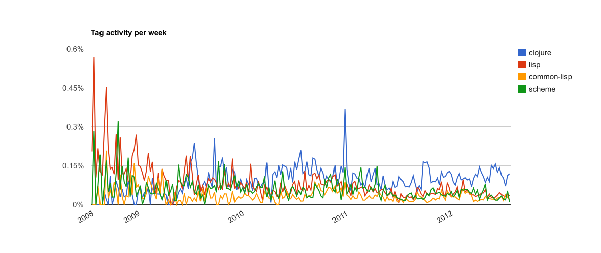
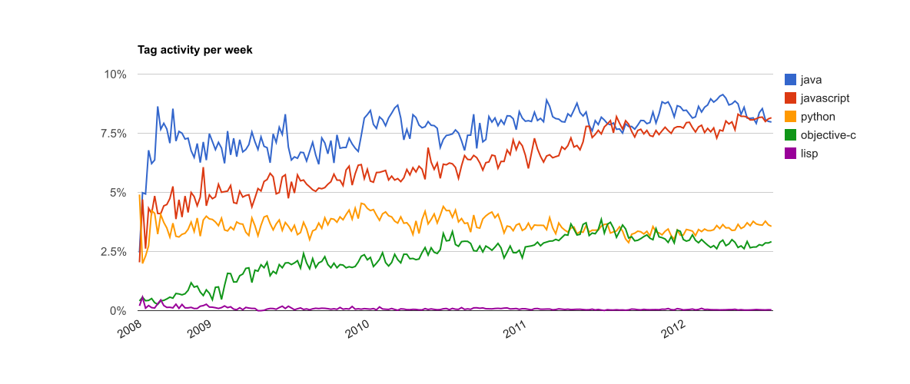
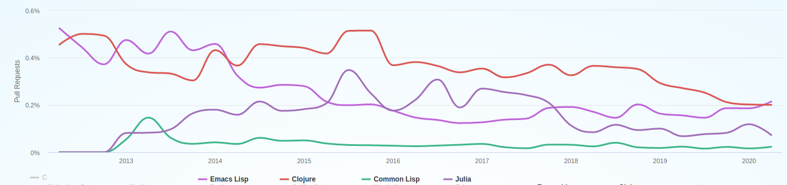
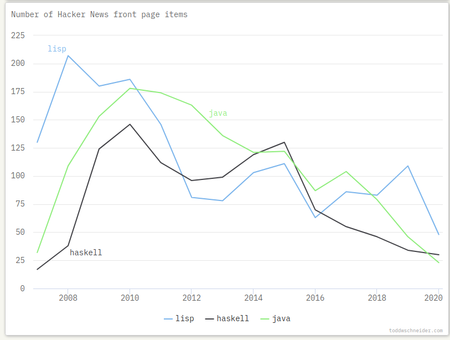

(Common) LISP
Di Santo, Javier - 101696
Dvorkin, Camila - 101109
Secchi, Anita - 99131

Historia
Early LISP History (1956 - 1959) ~ Herbert Stoyan
History of Lisp ~ John McCarthy
Revenge of the Nerds ~ Paul Graham
Lets LISP like it’s 1959 // LISP and the foundations of computing

“Programming is the problem of describing procedures or algorithms to an electronic calculator.”
~ John McCarthy, The Programming Problem
¿Por qué nace LISP?
Un lenguaje de programación para Inteligencia Artificial Simbólica.
- ¿Cómo se representa el conocimiento humano en términos computacionales?
McCarthy busca un lenguaje: Explicito, universal, conciso.
Una respuesta al modelo secuencial (la máquina de Turing) y al paradigma imperativo (FORTRAN).
¿Cómo nace LISP?
Idea
En los 50 se empiezan a desarrollar los primeros lenguajes de alto nivel (FLOW-MATIC, FORTRAN)
En 1956, en una conferencia de AI, McCarthy se inspira para comenzar a diseñar LISP (LISt Proccessing) usando:
Las ideas de procesamiento de listas y recursión de IPL-II
El alto nivel de FORTRAN (1957) y su expresión algebraica.
La notación del cálculo Lambda de Alonzo Church.
Cálculo Lambda
λx . x+x
Lambda calculus ~ Computerphile
Whiteboard problems in pure Lambda calculus
The Awesome Power of Theory, Explorations in the untyped lambda calculus ~ Ron Garret
“An Unsolvable Problem Of Elementary Number Theory” (1936) ~ Alonzo Church
“Can Programming Be Liberated from the von Neumann Style?” (1977) ~ John Backus
No hay estado interno
Solo tiene:
Identificadores (variables)
Expresiones lambda (construcción de funciones)
Aplicación de funciones
Church–Turing thesis: la notación Lambda es formalmente equivalente a una máquina de Turing
¿Cómo nace LISP?
Definición
“An Algebraic Language for the Manipulation of Symbolic Expression” (1958) ~ John McCarthy
Primer diseño (incompleto) de LISP.
Comienzos de la programación funcional.
-
Especificación completa de LISP, un lenguaje teórico, que no estaba pensado para ser implementado.
Solución más comprensible a la máquina de Turing.
Para demostrar que es Turing-Completo, define una “función universal de LISP”, que luego llegaría a ser
eval.
¿Cómo nace LISP?
Implementación
1960: Steve Russell, un alumno de McCarthy, decide probar e implementar en código máquina
eval- Primer interprete de LISP, para la IBM 704.
1962: Tim Hart y Mike Levin hacen el primer compilador de LISP.
Lo más cercano al LISP que conocemos hoy en día.
Funciones compiladas e interpretadas pueden ser intercambiadas libremente.
Pionero
What Made Lisp Different ~ Paul Graham
Influential Programming Languages, Lisp ~ David Chisnall
if then else
Funciones como objetos de primera clase
Recursión
Todas las variables son punteros
Garbarge Collection automático
Tipado dinámico
Interactividad gracias al interprete REPL
Programas compuestos por expresiones
El lenguaje completo está siempre disponible
Map y Reduce
Sintaxis
Expresiones -> átomos y listas
Code & Data -> eval, quote
;; El operador quote toma una s-expression y devuelve el código que la genera
(+ 1 1) ; evalua a 2
(quote (+ 1 1)) ; evalua a (+ 1 1)
('(+ 1 1)) ; quote se abrevia a '
;; El operador eval toma una s-expresion y devuelve su valor
(eval (+ 1 1)) ; evalua a 2
(eval '(+ 1 1)) ; evalua a 2
(eval ''(+ 1 1)) ; evalua a (+ 1 1)
;; 1 + 1 es 2
;; "1 + 1" es el código 1 + 1Puedo hacer un programa entero, ponerle un ' adelante, y estoy tratando con el código de mi programa.
Procesar listas -> car, cdr, cons y list
;; car recibe una lista y devuelve su primer elemento
(car (+ 1 2)) ; explota, no recibio una lista
(car '(+ 1 2)) ; devuelve +
;; cdr recibe una lista y devuelve el resto (todo menos el primer elemento)
(cdr '(+ 1 2)) ; devuelve (1 2)
;; cons crea un cons de un valor seguido de una lista
;; AKA agrega un valor al principio de la lista
(cons '1 '(2 3)) ; devuelve (1 2 3)
(cons '+ '(2 3)) ; devuelve (+ 2 3)
;; list compone una lista de sus argumentos
(list 1 2 3) ; devuelve (1 2 3)
(list '+ 2 3) ; devuelve (+ 2 3)
;; si tan solo hubiese una manera de ejecutar esta expresion!Procesar una s-expression -> Programming Bottom Up
;; Partimos de la expresion (+ 1 2)
(+ 1 2)
;; La convertimos en el código de la expresion
'(+ 1 2)
;; Sacamos su operador -> el +
(car '(+ 1 2))
;; Sacamos los operandos -> el (1 2)
(cdr '(+ 1 2))
;; Empaquetamos esto nuevamente -> (+ 1 2)
(cons (car '(+ 1 2)) (cdr '(+ 1 2)))
;; Evaluamos la expresion
(eval (cons (car '(+ 1 2)) (cdr '(+ 1 2))))Fractales, en Common LISP
Lindenmayer system
- Alfabeto: F, LEFT, RIGHT
- Axioma: F X
- Reglas de producción:
- X -> (X RIGHT Y F RIGHT)
- Y -> (LEFT F X LEFT Y)
Ejemplo de TDA: Tablas de hash
ANSI Common Lisp, Chapter 4: Specialized Data Structures ~ Paul Graham
Crear una tabla de hash en Common Lisp
- función
make-hash-table - No requiere ningún argumento, pero el opcional más usado es
:TEST(testear claves iguales)
Ejemplo:
Agregar un elemento a la tabla
- función
gethashen conjunto con la funciónsetf
Obtener un valor
- función
gethashtoma dos argumentos obligatorios: una clave y una tabla de hash
Borrar de la tabla de hash
- función
remhashpara eliminar el par clave-valor
Contar entradas
- función
hash-table-count
El tamaño del hash
* (setq tabla (make-hash-table :test 'equal))
#<HASH-TABLE :TEST EQUAL :COUNT 0 {10058B8553}>
*(hash-table-size tabla)
16 ; por default
*(hash-table-rehash-size tabla)
1.5 ; indica que la tabla se agrandará en un 50% cada vez que necesite crecer.- Ejemplo: agregar un total de un millón* de pares clave-valor al hash y ver como se redimensiona
* (time (dotimes (n 1000000) (setf (gethash n tabla) n))) ; le tomo el tiempo que tarda
Evaluation took:
0.162 seconds of real time
0.161954 seconds of total run time (0.137696 user, 0.024258 system)
[ Run times consist of 0.015 seconds GC time, and 0.147 seconds non-GC time. ]
100.00% CPU
355,501,132 processor cycles
83,836,896 bytes consed
NIL
* (hash-table-count tabla)
1000000
* (hash-table-size tabla)
1048576*Se eligió un millón para resaltar los tiempos que tardan
Fun stuff e iteradores del hash
maphash: itera sobre todas las claves de la tabla. Devuelve siempreNIL.
* (defun imprimir-entrada (clave valor) (format t "El valor asociado a la clave ~S es ~S~%" clave valor)) ; partimos de un hash con 3 claves
IMPRIMIR-ENTRADA
* (maphash #'imprimir-entrada tabla)
El valor asociado a la clave "clave1" es 1
El valor asociado a la clave "clave2" es 2
El valor asociado a la clave "clave3" es 3
NIL
*with-hash-table-iterator: es una macro que convierte el primer argumento en un iterador que en cada invocación devuelve un booleano generalizado que estruesi alguna entrada es devuelta, la clave, y el valor. Si no encuentra más claves, devuelveNIL
Metaprogramming
Code vs Data (Metaprogramming) ~ Computerphile
Why are there so many parentheses in Lisp?
data
No hay interpretación
Números
1Cadenas
"uno"
code
Hay un procesamiento
aritmética
1 + 2acciones
print "uno"
Orientado a expresiones
Expression-oriented programming language
Why Racket? Why Lisp? ~ Beautiful Racket
La mayoria de los los lenguajes distinguen entre
expresionesysentencias(statements)Expresión: frases que son evaluadas
Siempre producen un valor
Suelen no tener efectos secundarios
Sentencias: frases que marcan una acción
No retornan valores
Se ejecutan solamente por sus efectos secundarios
En LISP, todo es una expresiónn
Facil de testear
Código mas expresivo
Anidar expresiones de manera concisa
Transparencia referencial: equals can be replaced by equals
Symbolic expression
atom

x
construct cell

(x . y)
list

(x . (y . (z . NIL))) === (x y z)
tree

(x y z)
s-expressions

(* (+ 1 2) (- 5 3) )
Conclusión
¿Cómo se representá mi código escrito? árbol de s-expressions
¿Cómo se representá mi programa compilado? árbol de sintaxis abstracta (AST)
La representación interna de mi código es muy parecida a mi código escrito
Homoiconicidad
Homoiconic Example In Many Programming Languages ~ WikiWikiWeb
LISP es un lenguaje simbólico: El código es un ciudadano de primera clase
LISP es homoicónico: su representación interna se infiere leyendo el código
Toda expresión se puede interpretar de las dos maneras.
Se interpreta como data usando
quoteSe interpreta como código usando
eval
Macros
En Lisp, una macro genera y devuelve código.
Cuando se llama a una macro:
Se arma el código en base a la definición
defmacrode la misma.Se evalúa el nuevo código en el lugar de la llamada a la macro.
macroexpanddevuelve el código generado por una macro.
Motivación de macros
Poder elegir cuándo y cómo se evaluan los argumentos.
Cambiar orden de evaluación.
Manipular sintaxis del lenguaje.
A diferencia de otros lenguajes
Macros en Lisp? Se escriben sobre Lisp!
Macros en C? En el preprocesador de C
Code & Data (Part 2) -> Backquote & Comma
Code & Data (Part 3) -> Comma-at
Extensibilidad del lenguaje
Programa extensible: permite al usuario agregar funcionalidad.
Macros permiten que Lisp sea un lenguaje extensible.
Módulos y lenguajes de dominio específico [DSL]
Common Lisp Object System [CLOS]: agrega un sistema de objetos a Lisp.
lparallel: agrega funcionalidad para la creación de hilos.
CL-INTERPOL: para interpolación de strings.
Colección de librerías destacadas en awesome-cl.
¿Aún más?
Racket es un dialecto de Scheme y parte de la familia de Lisp.
Está orientado específicamente a crear lenguajes nuevos.
Desglosando eval
The Roots of LISP ~ Paul Graham
The Most Beautiful Program Ever Written ~ William Byrd
La magía de LISP es el read–eval–print loop: un entorno donde se toma lo escrito por el programador, se lee, se evalua, se imprime, y luego se vuelve a pedir input
Este self-interpreter es un evaluador meta-circular: esta escrito en LISP y puede evaluar código de LISP.
¿Cómo? Gracias a la función
eval, definida por McCarthy en base a 7 operadores que toma como axiomas:quote,atom,eq,car,cdr,consycond

That was the big revelation to me when I was in graduate school—when I finally understood that the half page of code on the bottom of page 13 of the Lisp 1.5 manual was Lisp in itself. These were “Maxwell’s Equations of Software!” This is the whole world of programming in a few lines that I can put my hand over.
~ Alan Kay, A Conversation with Alan Kay
;; Anotaciones sobre el código de Paul Graham en Roots of Lisp
; The Lisp defined in McCarthy's 1960 paper, translated into Common Lisp.
; eval recibe una expresion `e` y una lista de argumentos `a` -> El "entorno"
; Básicamente, recibe todo el scope donde estoy parado
(defun eval (e a)
; Es todo un if grande de 4 condiciones que chequean el tipo de la expresion
(cond
; Si es un atomo -> Devuelvo su valor en el entorno
((atom e) (assoc e a))
; Si no es un atomo tiene que ser una lista
; Si es una lista del tipo (atomo...resto) -> Es una función!
; (car e) es el operador
; (cadr e) es (car (cdr e)) que es el primero de los argumentos
((atom (car e))
; Si Es una funcion, ¿que funcion es?
(cond
; Si es quote, solo devuelvo los argumentos de la funcion
((eq (car e) 'quote) (cadr e))
; Para el resto de los axiomas, llamo a esa funcion contra los argumentos
; Como quiero llamar a la operacion contra los valores de los argumentos, llamo a eval
((eq (car e) 'atom) (atom (eval (cadr e) a)))
((eq (car e) 'eq) (eq (eval (cadr e) a)
(eval (caddr e) a)))
((eq (car e) 'car) (car (eval (cadr e) a)))
((eq (car e) 'cdr) (cdr (eval (cadr e) a)))
((eq (car e) 'cons) (cons (eval (cadr e) a)
(eval (caddr e) a)))
; cond tiene que evaluar recursivamente todas las condiciones, hasta encontrar el primer true
; para eso, se define una funcion auxiliar, `evcon` que recorre la lista de parametros y los evalua
((eq (car e) 'cond) (evcon (cdr e) a))
; el caso final es recibir una funcion definida por el usuario
('t (eval (cons (assoc (car e) a)
(cdr e))
a))))
; Si no es un atomo ni una lista que comienza por un atomo, entonces es una lista que comienza por otra cosa
; Si es una lista que comienza con label, evaluo la funcion a la que refiere
((eq (caar e) 'label)
(eval (cons (caddar e) (cdr e))
(cons (list (cadar e) (car e)) a)))
; Si es una lista que comienza con lambda, evaluo sus parametros
((eq (caar e) 'lambda)
(eval (caddar e)
(append (pair (cadar e) (evlis (cdr e) a))
a)))))LISP en la práctica
Stack Overflow


En cuanto a popularidad de LISP en preguntas dentro de stackoverflow, vemos que Common Lisp compite contra otros dialectos, pero Clojure es el más utilizado.
De todas formas, toda la familia de LISP es un porcentaje muy chico, en comparación a otros lenguajes.
GitHub
GitHut 2.0: A Small Place To Discover Languages In Github

Podemos ver que la cantidad de pull requests de Common Lisp anuales son muy bajos, incluso contra otros dialectos y lenguajes
Hacker News

Aunque Lisp no es un lenguaje que se usa mucho en la práctica, si hay un gran interés teórico por este (hay que tener en cuenta que este foro nos da una idea de que blogs o artículos se comparten de una tecnología, en vez de usos practicos y código productivo).
Comparaciones
Contra otros lenguajes, y contra otros dialectos de la familia LISP
Scheme
- Minimalista, solamente define el inner core del lenguaje
- Sistema de macros limpio y transparente
- Lexical scoping
- Garbage collection
- Ocupa mucha menos memoria
Python
- Sintaxis más sencilla de leer,
- Tiempo de compilacion más rápido
- Tiempo de ejecución mucho más lento
- Más dinámico, python realiza menos chequeos de erorres.
C++
- Lisp es una o dos veces más lento que C++
- Manejo de memoria con punteros
- Sintaxis más detallada y restrictiva
Casos de estudio
Beating the Averages ~ Paul Graham
Rewriting Reddit ~ Aaron Swartz
¿Y ahora?
¿Cómo aprendo LISP?